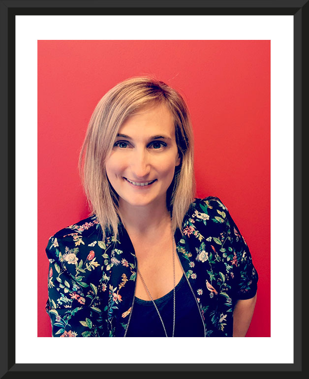
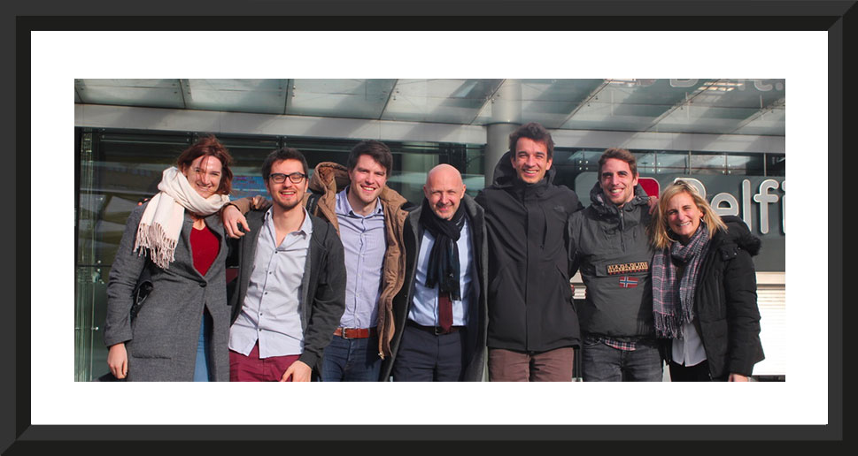
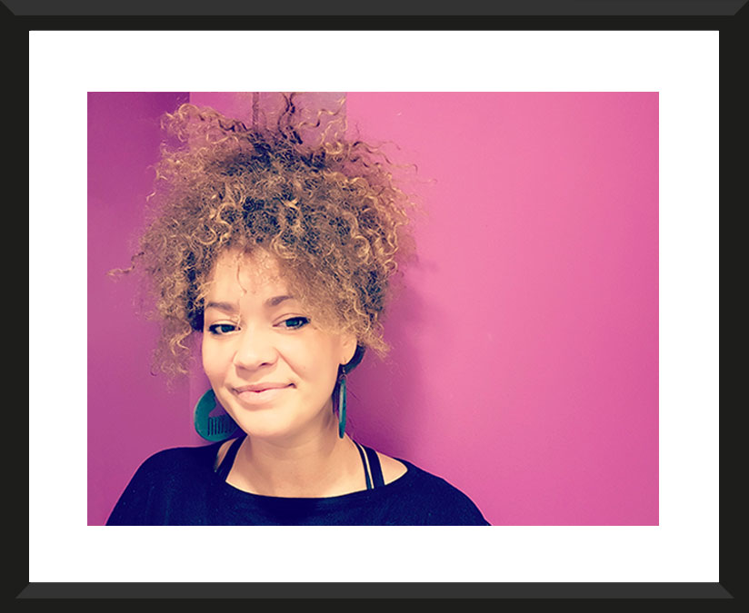
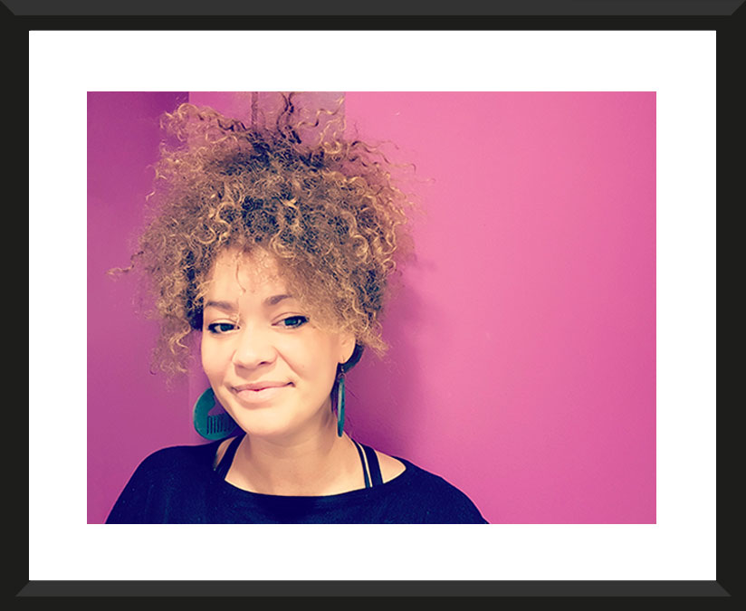
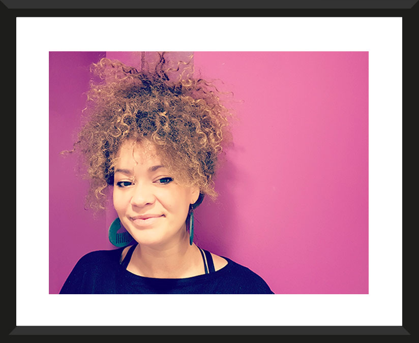
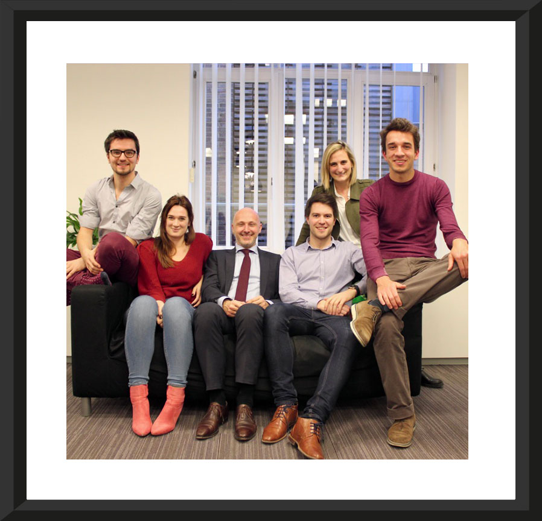
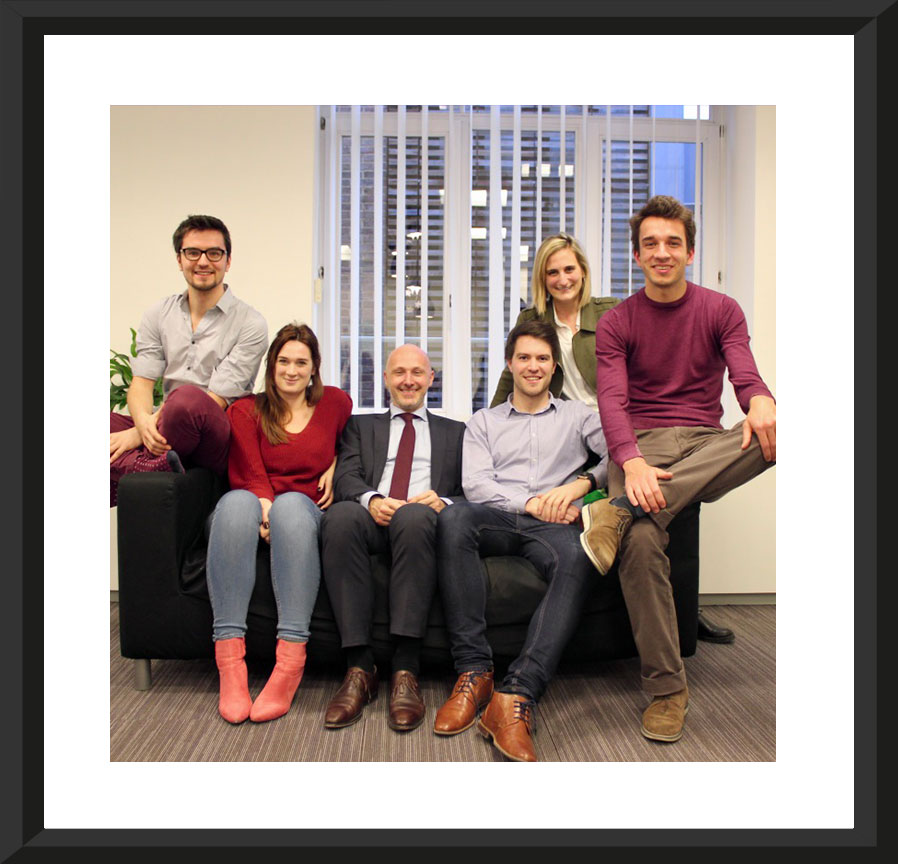
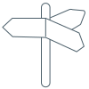
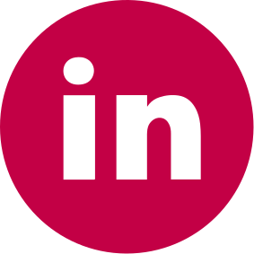
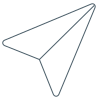

 



 

{{ content.recruiting.work_with_us[language] }}
{{ content.recruiting.one_click_away[language] }}
{{ content.contact.title[language] }}


{{ content.contact.address[language] }}
48 rue de l'ecuyer, 1000 Bxl
{{ content.contact.phone[language] }}
02/222.09.36
{{ content.contact.email[language] }}
info@thestudio.digital